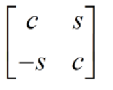

Intel® oneAPI Math Kernel Library Developer Reference - Fortran
Applies a Givens rotation to two adjacent rows or columns.
call slarot( lrows, lleft, lright, nl, c, s, a, lda, xleft, xright )
call dlarot( lrows, lleft, lright, nl, c, s, a, lda, xleft, xright )
call clarot( lrows, lleft, lright, nl, c, s, a, lda, xleft, xright )
call zlarot( lrows, lleft, lright, nl, c, s, a, lda, xleft, xright )
The routine ?larot applies a Givens rotation to two adjacent rows or columns, where one element of the first or last column or row is stored in some format other than GE so that elements of the matrix may be used or modified for which no array element is provided.
One example is a symmetric matrix in SB format (bandwidth = 4), for which uplo = 'L'. Two adjacent rows will have the format:
row j : C > C > C > C > C > . . . . row j + 1 : C > C > C > C > C > . . . .
'*' indicates elements for which storage is provided.
'.' indicates elements for which no storage is provided, but are not necessarily zero; their values are determined by symmetry.
' ' indicates elements which are required to be zero, and have no storage provided.
Those columns which have two '*' entries can be handled by srot (for slarot and clarot), or by drot( for dlarot and zlarot).
Those columns which have no '*' entries can be ignored, since as long as the Givens rotations are carefully applied to preserve symmetry, their values are determined.
Those columns which have one '*' have to be handled separately, by using separate variables p and q :
row j : C > C > C > C > C > p. . . . row j + 1 : q C > C > C > C > C > . . . .
If element p is set correctly, ?larot rotates the column and sets p to its new value. The next call to ?larot rotates columns j and j +1, and restore symmetry. The element q is zero at the beginning, and non-zero after the rotation. Later, rotations would presumably be chosen to zero q out.
Typical Calling Sequences: rotating the i -th and (i +1)-st rows.
These examples rotate the i -th and (i +1)-st rows.
General dense matrix:
call dlarot (.TRUE.,.FALSE.,.FALSE., n, c, s, a(i,1),lda, dummy, dummy)
General banded matrix in GB format:
j = max(1, i-kl )
nl = min( n, i+ku+1 ) + 1-j
call dlarot( .TRUE., i-kl.GE.1, i+ku.LT.n, nl, c,s,
a(ku+i+1-j,j),lda-1, xleft, xright )
i + 1 - j is just min(i, kl + 1).
Symmetric banded matrix in SY format, bandwidth K, lower triangle only:
j = max(1, i-k )
nl = min( k+1, i ) + 1
call dlarot( .TRUE., i-k.GE.1, .TRUE., nl, c,s,
a(i,j), lda, xleft, xright )
Same, but upper triangle only:
nl = min( k+1, n-i ) + 1
call dlarot( .TRUE., .TRUE., i+k.LT.n, nl, c,s,
a(i,i), lda, xleft, xright )Symmetric banded matrix in SB format, bandwidth K, lower triangle only: [ same as for SY, except:]
. . . .
a(i+1-j,j), lda, xleft, xright )
i+1-j is just min(i,k+1)
Same, but upper triangle only:
. . . .
a(k+1,i), lda-1, xleft, xright )Rotating columns is just the transpose of rotating rows, except for GB and SB: (rotating columns i and i+1) GB:
ku+j+1-i is just max(1,ku+2-i)
j = max(1, i-ku )
nl = min( n, i+kl+1 ) + 1-j
call dlarot( .TRUE., i-ku.LE.1, i+kl.LT.n, nl, c,s,
a(ku+j+1-i,i),lda-1, xtop, xbottm )
SB: (upper triangle)
. . . . . .
a(k+j+1-i,i),lda-1, xtop, xbottm )SB: (lower triangle) . . . . . . A(1,i),LDA-1, XTOP, XBOTTM )
. . . . . .
a(1,i),lda-1, xtop, xbottm )LOGICAL.
If lrows = .TRUE., ?larot rotates two rows.
If lrows = .FALSE., ?larot rotates two columns.
LOGICAL.
If lleft = .TRUE., xleft is used instead of the corresponding element of a for the first element in the second row (if lrows = .FALSE.) or column (if lrows=.TRUE.).
If lleft = .FALSE., the corresponding element of a is used.
LOGICAL.
If lleft = .TRUE., xright is used instead of the corresponding element of a for the first element in the second row (if lrows = .FALSE.) or column (if lrows=.TRUE.).
If lright = .FALSE., the corresponding element of a is used.
INTEGER. The length of the rows (if lrows=.TRUE.) or columns (if lrows=.TRUE.) to be rotated.
If xleft or xright are used, the columns or rows they are in should be included in nl, e.g., if lleft = lright = .TRUE., then nl must be at least 2.
The number of rows or columns to be rotated exclusive of those involving xleft and/or xright may not be negative, i.e., nl minus how many of lleft and lright are .TRUE. must be at least zero; if not, xerbla is called.
REAL for slarot,
DOUBLE PRECISION for dlarot,
COMPLEX for clarot,
DOUBLE COMPLEX for zlarot,
Specify the Givens rotation to be applied.
If lrows = .TRUE., then the matrix

is applied from the left.
If lrows = .FALSE., then the transpose thereof is applied from the right.
REAL for slarot,
DOUBLE PRECISION for dlarot,
COMPLEX for clarot,
DOUBLE COMPLEX for zlarot,
The array containing the rows or columns to be rotated. The first element of a should be the upper left element to be rotated.
INTEGER. The "effective" leading dimension of a.
If a contains a matrix stored in GE or SY format, then this is just the leading dimension of A.
If a contains a matrix stored in band (GB or SB) format, then this should be one less than the leading dimension used in the calling routine. Thus, if ais dimensioned a(lda,*) in ?larot, then a(1,j ) would be the j -th element in the first of the two rows to be rotated, and a(2,j ) would be the j -th in the second, regardless of how the array may be stored in the calling routine. a cannot be dimensioned, because for band format the row number may exceed lda, which is not legal FORTRAN.
If lrows = .TRUE., then lda must be at least 1, otherwise it must be at least nl minus the number of .TRUE. values in xleft and xright.
REAL for slarot,
DOUBLE PRECISION for dlarot,
COMPLEX for clarot,
DOUBLE COMPLEX for zlarot,
If lrows = .TRUE., xleft is used and modified instead of a(2,1) (if lrows = .TRUE.) or a(1,2) (if lrows = .FALSE.).
REAL for slarot,
DOUBLE PRECISION for dlarot,
COMPLEX for clarot,
DOUBLE COMPLEX for zlarot,
If lright = .TRUE., xright is used and modified instead of a(1,nl) (if lrows = .TRUE.) or a(nl,1) (if lrows = .FALSE.).
On exit, modified array A.